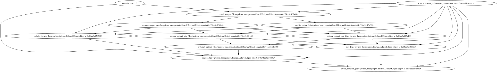

Aiida#
BAMresearch/NFDI4IngScientificWorkflowRequirements
This notebook defines the NFDI4Ing file-based workflow benchmark with aiida-workgraph and then loads the resulting workflow.json into jobflow, pyiron_base and pyiron_workflow to show that the same JSON file can be executed by different engines. Every stage of the workflow calls an external command-line tool (gmsh, meshio, a FEniCS-based Poisson solver, ParaView’s pvbatch, tectonic) in its own conda environment and passes file paths between stages rather than in-memory Python objects — see workflow.py for the six pipeline functions.
Define workflow with aiida#
aiida-workgraph represents a workflow as a WorkGraph of Tasks. load_profile() connects to the local AiiDA profile/database that stores provenance and results for every task. generate_mesh, plot_over_line, substitute_macros and compile_paper each return a single value and can be added to the graph unchanged, but convert_to_xdmf and poisson return a dict, so they are wrapped with task(outputs=[...]) to expose each dictionary key as its own output socket that later tasks can connect to.
import os
from python_workflow_definition.aiida import write_workflow_json
from aiida_workgraph import WorkGraph, task
from aiida import orm, load_profile
load_profile()
Profile<uuid='3ce302a995914d2e8a7b6327a10fe381' name='pwd'>
from workflow import (
generate_mesh,
convert_to_xdmf as _convert_to_xdmf,
poisson as _poisson,
plot_over_line,
substitute_macros,
compile_paper,
)
convert_to_xdmf = task(outputs=["xdmf_file", "h5_file"])(_convert_to_xdmf)
poisson = task(outputs=["numdofs", "pvd_file", "vtu_file"])(_poisson)
AiiDA tracks every input as a typed, storable node, so the shared domain_size and source_directory values are wrapped as orm.Float and orm.Str before being connected to any task.
source_directory = orm.Str(os.path.abspath(os.path.join(os.curdir, "source")))
domain_size = orm.Float(2.0)
wg = WorkGraph("wg-nfdi")
Each wg.add_task call below adds one stage of the pipeline: mesh generation, XDMF conversion, the Poisson solve, line-plot postprocessing, LaTeX macro substitution and paper compilation. Outputs are wired to the next task’s inputs with .outputs.<name>; since the underlying functions communicate through files on disk, these connections are really file paths handed from one task to the next, not shared Python objects.
gmsh_output_file = wg.add_task(
generate_mesh,
domain_size=domain_size,
source_directory=source_directory,
)
meshio_output_dict = wg.add_task(
convert_to_xdmf,
gmsh_output_file=gmsh_output_file.outputs.result,
)
poisson_dict = wg.add_task(
poisson,
meshio_output_xdmf=meshio_output_dict.outputs.xdmf_file,
meshio_output_h5=meshio_output_dict.outputs.h5_file,
source_directory=source_directory,
)
pvbatch_output_file = wg.add_task(
plot_over_line,
poisson_output_pvd_file=poisson_dict.outputs.pvd_file,
poisson_output_vtu_file=poisson_dict.outputs.vtu_file,
source_directory=source_directory,
)
macros_tex_file = wg.add_task(
substitute_macros,
pvbatch_output_file=pvbatch_output_file.outputs.result,
ndofs=poisson_dict.outputs.numdofs,
domain_size=domain_size,
source_directory=source_directory,
)
paper_output = wg.add_task(
compile_paper,
macros_tex=macros_tex_file.outputs.result,
plot_file=pvbatch_output_file.outputs.result,
source_directory=source_directory,
)
wg
The wg widget above renders the assembled task graph. Once satisfied, write_workflow_json serializes it into the PWD workflow.json format — one function node per task, input nodes for domain_size/source_directory, and edges recording which task output feeds which task’s input port, as shown by the cat output below.
workflow_json_filename = "aiida_nfdi.json"
write_workflow_json(wg=wg, file_name=workflow_json_filename)
!cat {workflow_json_filename}
{
"version": "0.1.0",
"nodes": [
{
"id": 0,
"type": "function",
"value": "workflow.generate_mesh"
},
{
"id": 1,
"type": "function",
"value": "workflow.convert_to_xdmf"
},
{
"id": 2,
"type": "function",
"value": "workflow.poisson"
},
{
"id": 3,
"type": "function",
"value": "workflow.plot_over_line"
},
{
"id": 4,
"type": "function",
"value": "workflow.substitute_macros"
},
{
"id": 5,
"type": "function",
"value": "workflow.compile_paper"
},
{
"id": 6,
"type": "input",
"name": "domain_size",
"value": 2.0
},
{
"id": 7,
"type": "input",
"name": "source_directory",
"value": "/home/jovyan/example_workflows/nfdi/source"
},
{
"id": 8,
"type": "output",
"name": "result"
}
],
"edges": [
{
"target": 1,
"targetPort": "gmsh_output_file",
"source": 0,
"sourcePort": null
},
{
"target": 2,
"targetPort": "meshio_output_xdmf",
"source": 1,
"sourcePort": "xdmf_file"
},
{
"target": 2,
"targetPort": "meshio_output_h5",
"source": 1,
"sourcePort": "h5_file"
},
{
"target": 3,
"targetPort": "poisson_output_pvd_file",
"source": 2,
"sourcePort": "pvd_file"
},
{
"target": 3,
"targetPort": "poisson_output_vtu_file",
"source": 2,
"sourcePort": "vtu_file"
},
{
"target": 4,
"targetPort": "pvbatch_output_file",
"source": 3,
"sourcePort": null
},
{
"target": 4,
"targetPort": "ndofs",
"source": 2,
"sourcePort": "numdofs"
},
{
"target": 5,
"targetPort": "macros_tex",
"source": 4,
"sourcePort": null
},
{
"target": 5,
"targetPort": "plot_file",
"source": 3,
"sourcePort": null
},
{
"target": 0,
"targetPort": "domain_size",
"source": 6,
"sourcePort": null
},
{
"target": 0,
"targetPort": "source_directory",
"source": 7,
"sourcePort": null
},
{
"target": 2,
"targetPort": "source_directory",
"source": 7,
"sourcePort": null
},
{
"target": 3,
"targetPort": "source_directory",
"source": 7,
"sourcePort": null
},
{
"target": 4,
"targetPort": "domain_size",
"source": 6,
"sourcePort": null
},
{
"target": 4,
"targetPort": "source_directory",
"source": 7,
"sourcePort": null
},
{
"target": 5,
"targetPort": "source_directory",
"source": 7,
"sourcePort": null
},
{
"target": 8,
"targetPort": null,
"source": 5,
"sourcePort": null
}
]
}
Load Workflow with jobflow#
python_workflow_definition.jobflow.load_workflow_json reconstructs the same six-stage pipeline as a jobflow Flow, purely from aiida_nfdi.json — no reference to the aiida-workgraph objects defined above. run_locally then executes the jobs in dependency order, re-running gmsh, meshio, the Poisson solver, pvbatch and tectonic exactly as before.
from python_workflow_definition.jobflow import load_workflow_json
from jobflow.managers.local import run_locally
flow = load_workflow_json(file_name=workflow_json_filename)
result = run_locally(flow)
result
2025-05-24 05:41:02,340 INFO Started executing jobs locally
2025-05-24 05:41:02,615 INFO Starting job - generate_mesh (1c3eab15-7639-4f4e-9ca7-7523ba640ca5)
2025-05-24 05:41:03,800 INFO Finished job - generate_mesh (1c3eab15-7639-4f4e-9ca7-7523ba640ca5)
2025-05-24 05:41:03,801 INFO Starting job - convert_to_xdmf (07acbed1-2abb-4141-896d-170b58aba7c2)
2025-05-24 05:41:05,099 INFO Finished job - convert_to_xdmf (07acbed1-2abb-4141-896d-170b58aba7c2)
2025-05-24 05:41:05,100 INFO Starting job - poisson (b212b743-f36d-4f7b-a64a-79060469f34b)
2025-05-24 05:41:12,945 INFO Finished job - poisson (b212b743-f36d-4f7b-a64a-79060469f34b)
2025-05-24 05:41:12,946 INFO Starting job - plot_over_line (af5a3a54-b7fa-45f8-a70f-7f95d23c32c4)
2025-05-24 05:41:14,360 INFO Finished job - plot_over_line (af5a3a54-b7fa-45f8-a70f-7f95d23c32c4)
2025-05-24 05:41:14,360 INFO Starting job - substitute_macros (ec55c04a-a5cb-4d8f-9981-961f7297532e)
2025-05-24 05:41:15,171 INFO Finished job - substitute_macros (ec55c04a-a5cb-4d8f-9981-961f7297532e)
2025-05-24 05:41:15,172 INFO Starting job - compile_paper (629539b7-2541-4ba7-9546-b7adb0cc312e)
2025-05-24 05:42:14,698 INFO Finished job - compile_paper (629539b7-2541-4ba7-9546-b7adb0cc312e)
2025-05-24 05:42:14,699 INFO Finished executing jobs locally
{'1c3eab15-7639-4f4e-9ca7-7523ba640ca5': {1: Response(output='/home/jovyan/example_workflows/nfdi/preprocessing/square.msh', detour=None, addition=None, replace=None, stored_data=None, stop_children=False, stop_jobflow=False, job_dir=PosixPath('/home/jovyan/example_workflows/nfdi'))},
'07acbed1-2abb-4141-896d-170b58aba7c2': {1: Response(output={'xdmf_file': '/home/jovyan/example_workflows/nfdi/preprocessing/square.xdmf', 'h5_file': '/home/jovyan/example_workflows/nfdi/preprocessing/square.h5'}, detour=None, addition=None, replace=None, stored_data=None, stop_children=False, stop_jobflow=False, job_dir=PosixPath('/home/jovyan/example_workflows/nfdi'))},
'b212b743-f36d-4f7b-a64a-79060469f34b': {1: Response(output={'numdofs': 357, 'pvd_file': '/home/jovyan/example_workflows/nfdi/processing/poisson.pvd', 'vtu_file': '/home/jovyan/example_workflows/nfdi/processing/poisson000000.vtu'}, detour=None, addition=None, replace=None, stored_data=None, stop_children=False, stop_jobflow=False, job_dir=PosixPath('/home/jovyan/example_workflows/nfdi'))},
'af5a3a54-b7fa-45f8-a70f-7f95d23c32c4': {1: Response(output='/home/jovyan/example_workflows/nfdi/postprocessing/plotoverline.csv', detour=None, addition=None, replace=None, stored_data=None, stop_children=False, stop_jobflow=False, job_dir=PosixPath('/home/jovyan/example_workflows/nfdi'))},
'ec55c04a-a5cb-4d8f-9981-961f7297532e': {1: Response(output='/home/jovyan/example_workflows/nfdi/postprocessing/macros.tex', detour=None, addition=None, replace=None, stored_data=None, stop_children=False, stop_jobflow=False, job_dir=PosixPath('/home/jovyan/example_workflows/nfdi'))},
'629539b7-2541-4ba7-9546-b7adb0cc312e': {1: Response(output='/home/jovyan/example_workflows/nfdi/postprocessing/paper.pdf', detour=None, addition=None, replace=None, stored_data=None, stop_children=False, stop_jobflow=False, job_dir=PosixPath('/home/jovyan/example_workflows/nfdi'))}}
Load Workflow with pyiron_base#
python_workflow_definition.pyiron_base.load_workflow_json turns the JSON graph into a list of delayed pyiron jobs; .draw() visualizes their dependencies and .pull() triggers execution, running each job in turn and returning the final paper.pdf path.
from python_workflow_definition.pyiron_base import load_workflow_json
delayed_object_lst = load_workflow_json(file_name=workflow_json_filename)
delayed_object_lst[-1].draw()

delayed_object_lst[-1].pull()
The job generate_mesh_47725c16637f799ac042e47468005db3 was saved and received the ID: 1
The job convert_to_xdmf_d6a46eb9a4ec352aa996e783ec3c785f was saved and received the ID: 2
The job poisson_3c147fc86db87cf0c0f94bda333f8cd8 was saved and received the ID: 3
The job plot_over_line_ef50933291910dadcc8311924971e127 was saved and received the ID: 4
The job substitute_macros_63766eafd6b1980c7832dd8c9a97c96e was saved and received the ID: 5
The job compile_paper_128d1d58374953c00e95b8de62cbb10b was saved and received the ID: 6
'/home/jovyan/example_workflows/nfdi/postprocessing/paper.pdf'
Load Workflow with pyiron_workflow#
Finally, the same JSON is loaded into a pyiron_workflow Workflow object. .draw() shows the node graph and .run() executes it end to end, again shelling out to each external tool in turn.
from python_workflow_definition.pyiron_workflow import load_workflow_json
wf = load_workflow_json(file_name=workflow_json_filename)
wf.draw(size=(10,10))
wf.run()